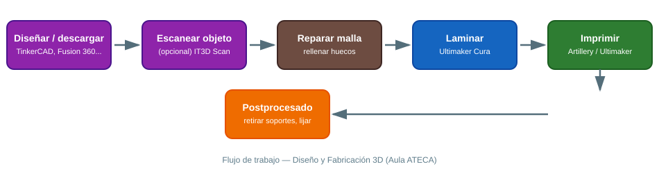

🛠️ Diseño y Fabricación 3D
Equipamiento del Aula ATECA para modelado, escaneo e impresión 3D: dos impresoras (Artillery Genius Pro y Ultimaker) y un escáner 3D (IT3D Scan). Para descargar diseños ya hechos y listos para imprimir, consulta el documento Repositorios de diseños 3D gratuitos.
Flujo de trabajo general

{ width="800" }Antes de entrar en cada máquina, conviene tener claro el recorrido completo: diseñar o descargar → (opcional) escanear → reparar la malla → laminar → imprimir → postprocesar. Saltarse el paso de reparar la malla es la causa más habitual de que una impresión falle a mitad de proceso.
1. Impresora 3D Artillery Genius Pro
Impresora FDM de alta precisión con extrusor de alto rendimiento, cama caliente de vidrio y nivelación automática. Compatible con múltiples materiales (PLA, PETG, ABS con precauciones).
1.1 Puesta en marcha
- Enciende la impresora y lanza la auto-nivelación asistida desde el menú (sigue el asistente en pantalla; la máquina toca varios puntos de la cama para calcular el mapa de nivelación).
- Precalienta el extrusor a la temperatura del material (ver tabla de temperaturas más abajo) y carga el filamento hasta que salga material limpio y continuo por la boquilla.
- En Ultimaker Cura, selecciona el perfil "Artillery Genius Pro", ajusta la altura de capa (0.2 mm es un buen valor por defecto para piezas educativas) y exporta el
.gcodea una tarjeta SD/USB. - Lanza la impresión y vigila las 3-5 primeras capas: si no se adhieren bien a la cama, para la impresión y revisa nivelación o limpieza de la superficie (alcohol isopropílico).
1.2 Temperaturas orientativas por material
| Material | Extrusor | Cama | Notas |
|---|---|---|---|
| PLA | 190-210 °C | 50-60 °C | El más fácil para empezar, poco olor |
| PETG | 220-240 °C | 70-80 °C | Más resistente, algo más difícil de imprimir |
| ABS | 230-250 °C | 90-100 °C | Requiere recinto cerrado; usar con ventilación |
1.3 Buenas prácticas en el aula
- Usa siempre una falda (skirt/brim) en piezas pequeñas o con poca base de apoyo.
- Comprueba la temperatura recomendada del filamento (suele venir impresa en la bobina) antes de cambiar de material.
- Guarda el filamento en bolsas herméticas con gel de sílice: la humedad es la causa más común de mala calidad de impresión (efecto "chisporroteo" al extruir).
2. Impresora 3D Ultimaker
Impresora profesional orientada a prototipado y piezas técnicas, con extrusión de filamento compatible con PLA, ABS y plásticos de ingeniería. Estructura robusta pensada para entornos industriales/educativos exigentes.
2.1 Puesta en marcha
- Lamina el modelo con Ultimaker Cura seleccionando el perfil de la impresora Ultimaker del aula.
- Comprueba el perfil de material (algunos requieren cama calefactada y recinto cerrado).
- Transfiere el
.gcodepor USB o red (según el modelo disponible en el aula).
2.2 Buenas prácticas en el aula
- Prioriza esta impresora para piezas técnicas/funcionales que requieran más precisión dimensional (por ejemplo, piezas que deban encajar entre sí).
- Revisa boquilla y varillas de guía periódicamente (mantenimiento preventivo trimestral); una boquilla desgastada produce líneas de impresión irregulares.
3. Escáner 3D — IT3D Scan
Escáner que captura objetos y entornos en 3D con alta precisión, generando modelos que pueden editarse, repararse e imprimirse.
3.1 Flujo de trabajo básico
- Coloca el objeto sobre una superficie neutra, con buena iluminación difusa (evita reflejos y superficies muy brillantes o transparentes: pulverizar spray mate ayuda en objetos metálicos o de vidrio).
- Escanea rotando el objeto o el escáner según el modelo, cubriendo todos los ángulos; ve comprobando en pantalla que no quedan "agujeros" en la nube de puntos.
- Exporta la malla (
.stl/.obj) y repárala si es necesario (rellenar huecos, suavizar) con software como Meshmixer o el propio software del escáner. - Importa el modelo reparado en el slicer (Cura) para imprimirlo.
3.2 Buenas prácticas en el aula
- Los objetos pequeños y con detalle fino dan mejor resultado que piezas muy grandes.
- Evita escanear con luz solar directa cambiante (las sombras se mueven durante el escaneo): mejor luz artificial estable.
📚 Software de diseño y edición 3D
- TinkerCAD{target="_blank"} – Modelado online para iniciación, ideal en 1º de ciclos.
- Fusion 360{target="_blank"} – CAD profesional con simulación (licencia educativa gratuita).
- SketchUp{target="_blank"} – Modelado intuitivo orientado a arquitectura/diseño.
- FreeCAD{target="_blank"} – CAD paramétrico libre y gratuito.
- Ultimaker Cura{target="_blank"} – Laminador (slicer) gratuito, válido para ambas impresoras del aula.
📚 Recursos
- 🎥 Vídeo de presentación del escáner IT3D Scan{target="_blank"}
- 🎓 Curso IT3D Scan ONE{target="_blank"}
- 📦 Repositorios de diseños 3D gratuitos — documento específico de este proyecto.
- 🌐 Web del Aula ATECA (fuente de este manual): Tecnologías | Aula AtecA{target="_blank"}
📷 Pendiente: añadir fotos reales de las dos impresoras y del escáner del aula, y ejemplos de piezas impresas por el alumnado.